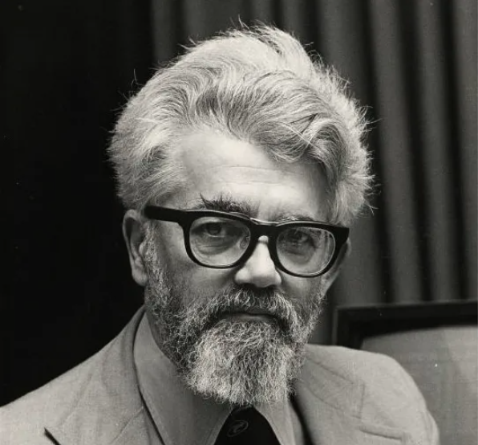

Profile of John McCarthy from the 1960's
“If it takes 200 years to achieve artificial intelligence, and then finally there is a textbook that
explains how its done, the hardest part of that textbook to write will be the part that explains why people didn’t
think of it 200 years ago…” - John McCarthy
- Breif History -
Known as a professor emeritus of computer science at Stanford. John McCarthy, along with other computer
scientists co-founded an MIT Project that would later be known as Artificial Intelligence. Though while he was
working on the project, he also invented a computer language called LISP. This program allowed many computer
programmers to create syntax or DSL language of their own. Making it different than other programs like FORTRAN or
ALGOL. With his project in success, it lead to many rewards. Including the National Metal of Science in 1990, or
perhaps his signed document that there was Programs With Common Sence. Maybe
even a permanently kept labratory called SAIL (Stanford Artificial Intelligence Laboratory) for its university.
- Facts -
- This guy made the first "hand-eye" computer, so that it can be able to see 3D Objects to complete stacking and
arranging tasks!
- It was said that he was suspended from Caltech (California Institute of Technology) for failing Physical
Education
- He once thought of an idea called a "Space Fountain". An active structure that works similar to the Space
Elevator.
- John McCarthy also invented a task called GC (Garbage Collection) for his LISP program. This was useful for
managing memory that wouldn't be necessarily kept in the future, to create free storage in return.
- Part of his life was Russian! While he may have been an American Computer Scientist, his parents were part of
the CPUSA (the Communist Party of the United States of America). He was also able to speak Russian Language very
easily, and also made friends with Russian Scientists, until he turned in becoming a Conservative Republican.
- John McCarthy had also develpoed a technique which allowed a host computer to run multiple terminal computers
that run the same program as it does. This was called "Time Sharing!"